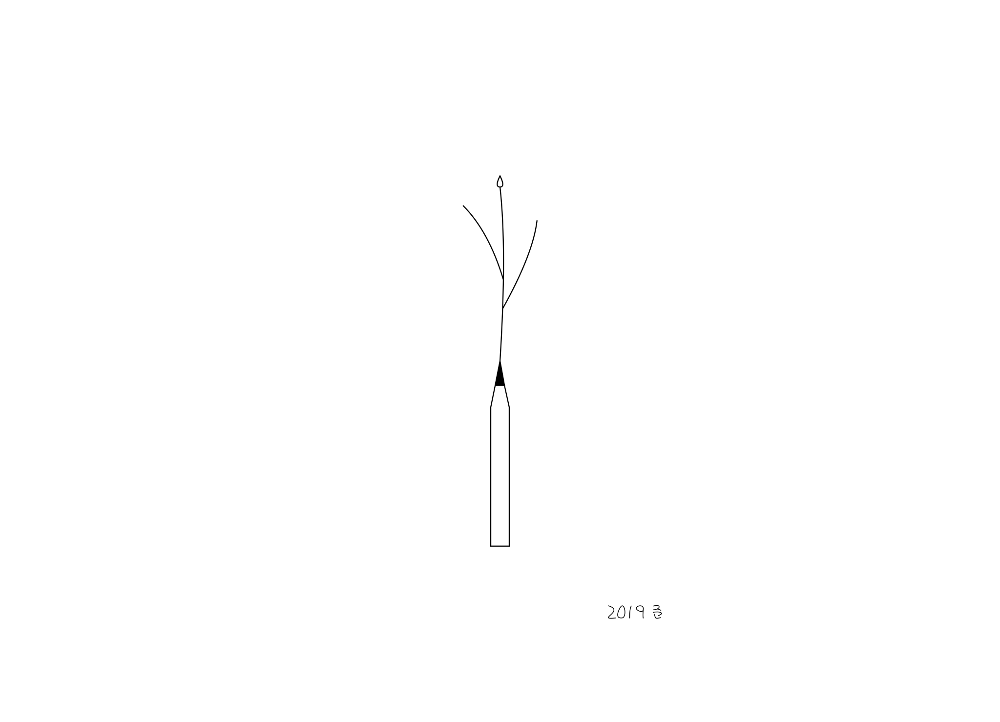
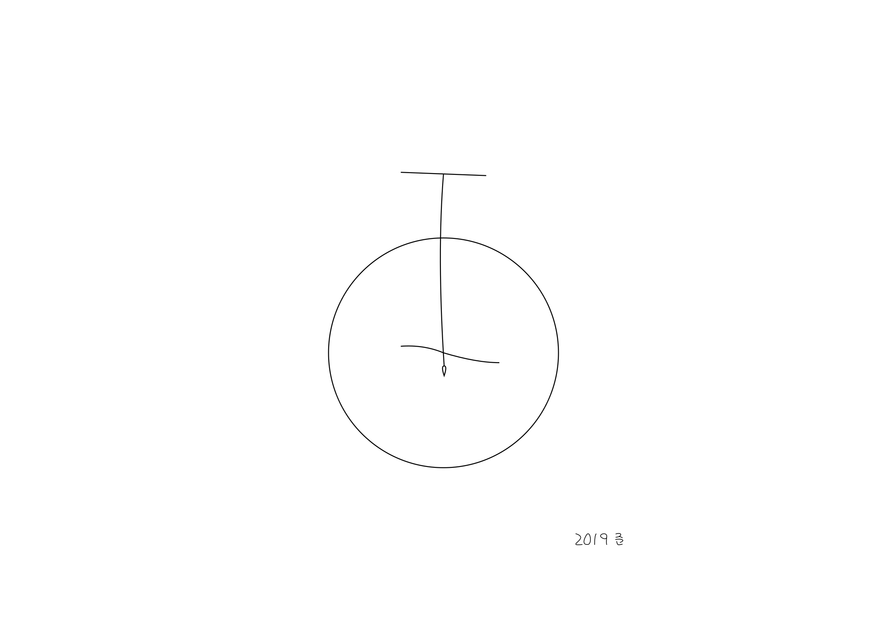
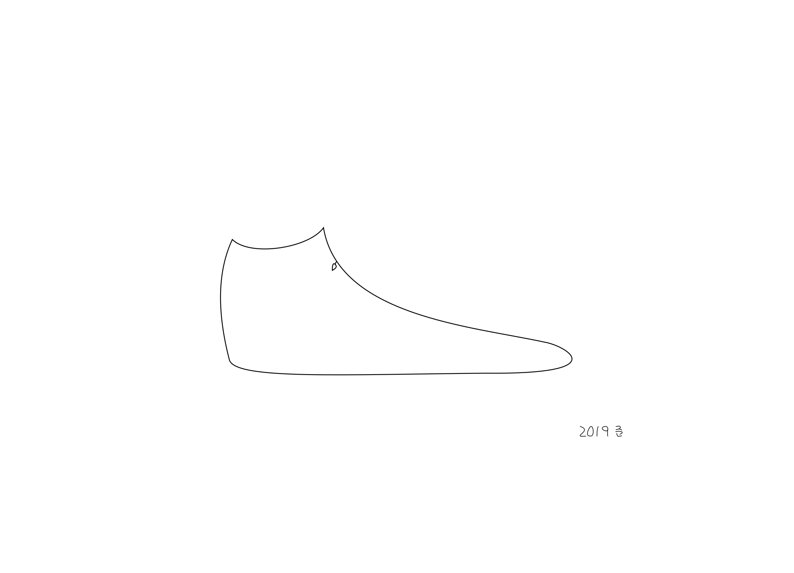
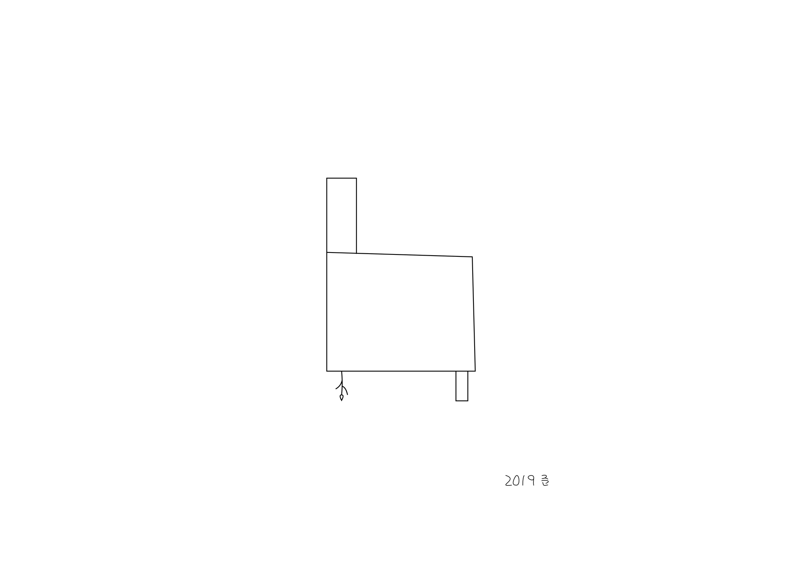

나의 꽃은 어디에 있나요
김준호 그림책

연필에 핀 꽃이 없는 종이를 깨운다
없는 시곗바늘에 꽃을 포갠다

없는 숲을 달린다
꽃우산

없는 신발을 신을 것이다
없는 불이 켜질 거예요

물구나무 서는 꽃
없는 혀를 내민다
다음 전시 이름은 뒷면입니다
이 꽃을 마구 눌러주세요
이 꽃을 꺾어줄 따개는 어디에 있나요
건반에 핀 꽃의 향을 한 문장으로 써주세요
당신의 리듬에 맞춰 춤 출 거예요
나를 없는 머리에 씌워 주세요
나를 당신 어깨에 거세요
나를 밟으세요
두 벽이 포개진 자리에 꽃이 펴요
당신의 손을 내밀어주세요
없는 가지에 찔린 창이 꽃을 뱉는다
나를 켜면 이곳이 환해질까요
당신의 발등을 조심하세요
바다와 하늘의 틈에서 꽃이 펴요
끝